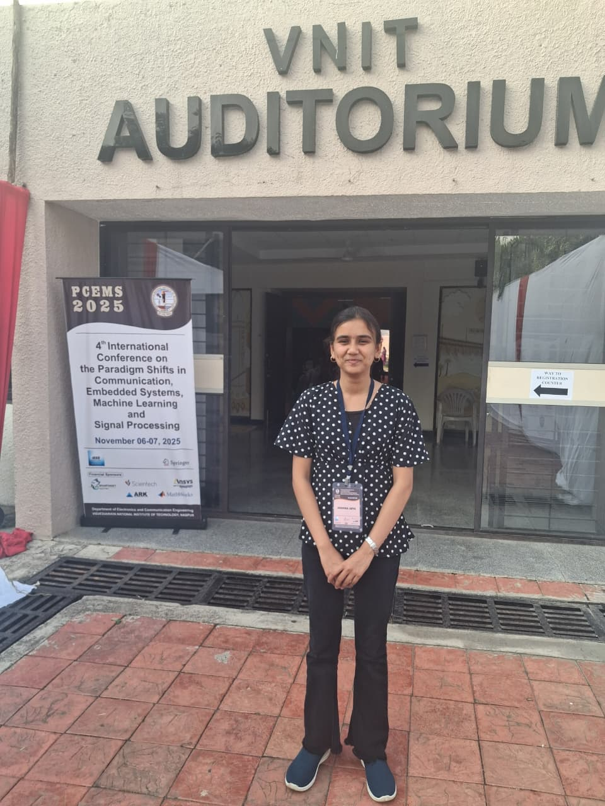
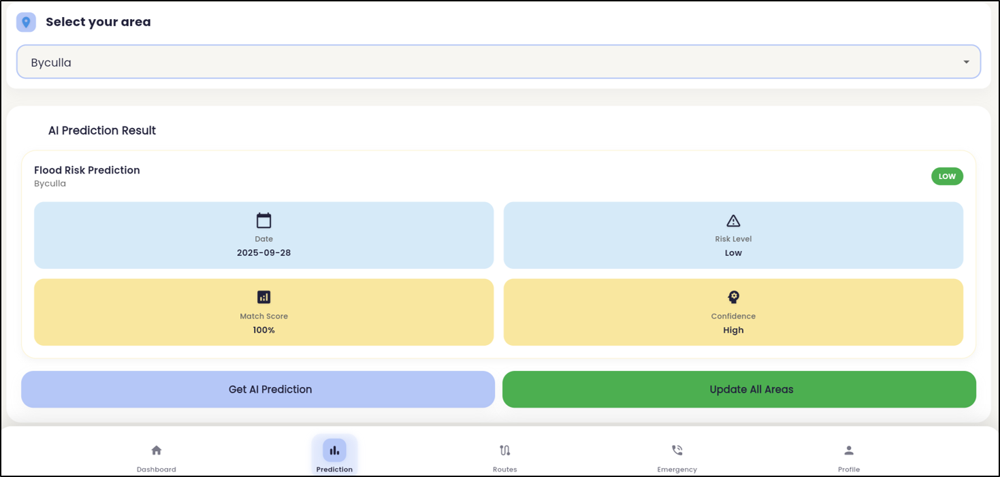
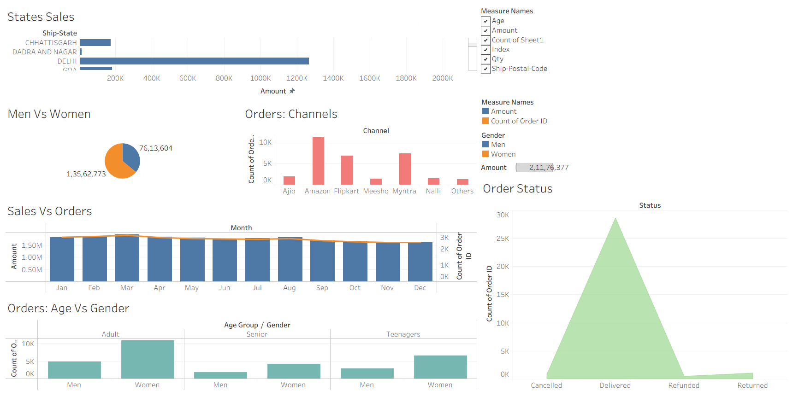
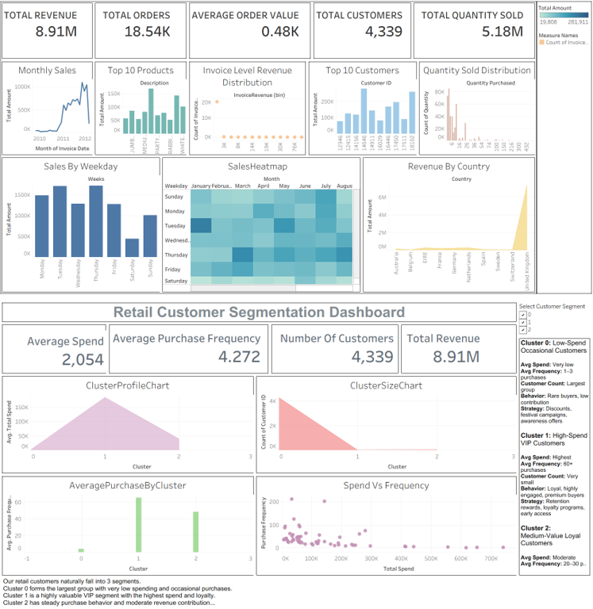
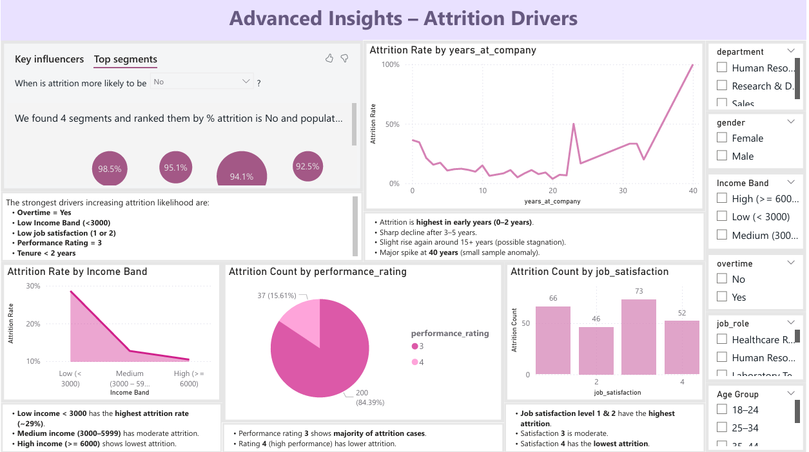

Data Analyst · CS Student
I turn messy data into clear stories using Python, SQL, Excel, Tableau, and Machine Learning.

I’m a final-year Computer Science student with a strong focus on Data Analytics and Machine Learning. I enjoy taking raw, unstructured data and turning it into dashboards, predictive models, and clear recommendations that help people make decisions with confidence.
My recent work includes building an AI-Based Flood Risk Early Warning System for Mumbai using ensemble models, risk-aware evacuation routing, and automated email alerts. A full HR Attrition Analytics dashboard in Power BI, and a Customer segmentation model for 4,000+ retail customers. I also completed the Deloitte Australia Data Analytics Virtual Job Simulation, where I worked on ETL-style data preparation, anomaly investigation, and interactive Tableau dashboards.
For the HR Analytics project, I used PostgreSQL + Power BI to analyze 1470 employees records and identify key drivers of attrition. The final dashboard highlights actionable insights to help HR teams improve retention.
I recently presented my work at the PCEMS 2025 conference at VNIT Nagpur, where I shared our AI-based flood risk early warning system and received a certificate of recognition. At college, I’ve also contributed as the Treasurer of the Creativity Club, managing event budgets, coordinating sponsorships, and helping organize multiple technical and cultural events. These experiences have strengthened my leadership, ownership, and communication skills.
Completed an industry-level internship simulation involving ETL data cleaning, anomaly detection, forensic analytics, and stakeholder reporting. Developed an interactive Tableau dashboard and gained hands-on experience with data-driven decision-making.
Managed budgets, financial planning, and event operations for multiple college-level technical and cultural events. Strengthened leadership, teamwork, organization, and communication skills.
Presented a research paper titled “AI-Based Flood Risk Early Warning System for Urban Environments” at the PCEMS 2025 conference. Recognized for innovation in flood risk prediction and real-world disaster management solutions.

Built ensemble ML models (Random Forest + XGBoost) to classify high-risk flood zones for Mumbai, achieving 83% precision and 82% recall. Implemented risk-aware evacuation routing and an automated email alert system for at-risk regions.
View Project →
Designed Excel and Tableau dashboards to analyze sales performance, customer demographics, and channel-wise revenue. Identified key patterns such as top-performing months, states, and e-commerce platforms like Amazon, Flipkart, and Myntra.
View Project →
Clustered 4,339 customers using K-Means to identify high-value groups, discount-seekers, and low-engagement segments. Helped design targeted marketing strategies and personalized campaigns with clear segment profiles.
View Project →
A Two-Page Interactive PowerBI Dashboard analyzing employee attrition across departments, job roles, genders, income levels, and tenure. The project identifies major drivers of attrition and presents actionable recommendations for HR to reduce turnover.
View Project →Email: anshikaarya313@gmail.com
LinkedIn: anshika-arya-1b17652ab
GitHub: github.com/anshu-3029